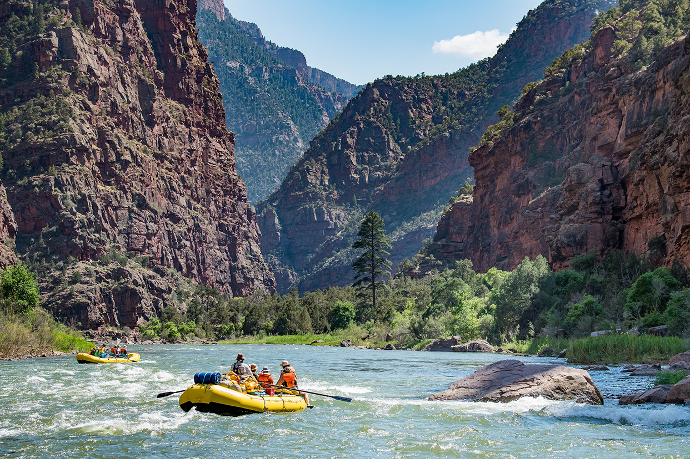
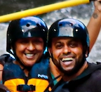
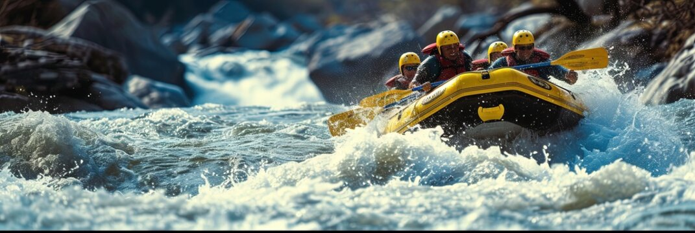
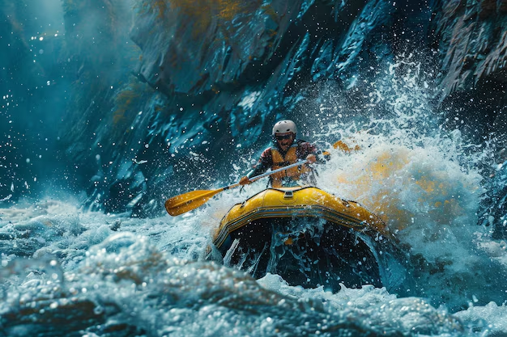
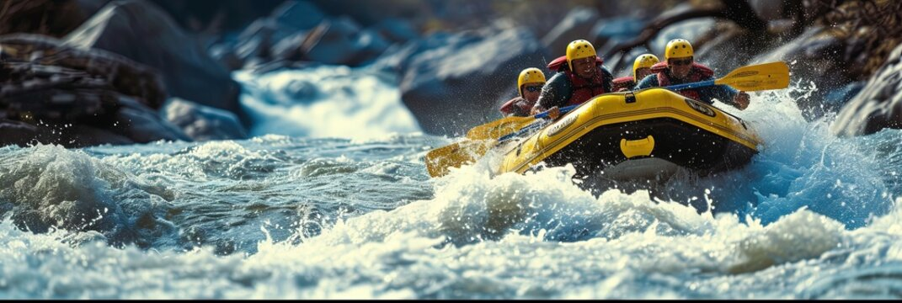
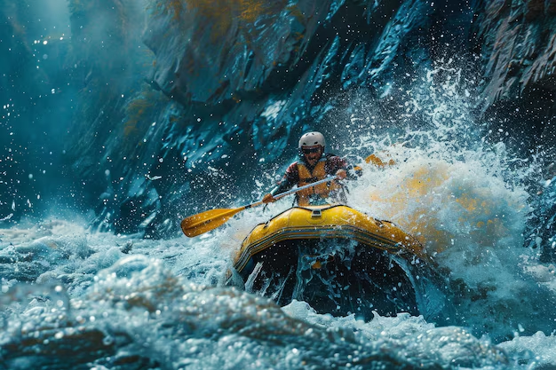

Don’t let life pass you by without experiencing the thrill of adventure. Rapid Adventures is your ticket to unforgettable moments and stories that will last a lifetime. Book your adventure today and get ready to embark on a journey that will challenge, excite, and inspire you.


Rapid Adventures
History
Our company was born from a profound love for nature and the exhilarating adventure of riding the rapids. It all began with a group of friends who shared a common passion for the great outdoors and the unyielding forces of nature. Every weekend, they would find themselves drawn to the winding rivers, seeking the thrill and tranquility that only a day navigating the currents could provide.
Life Awaits You!
 


